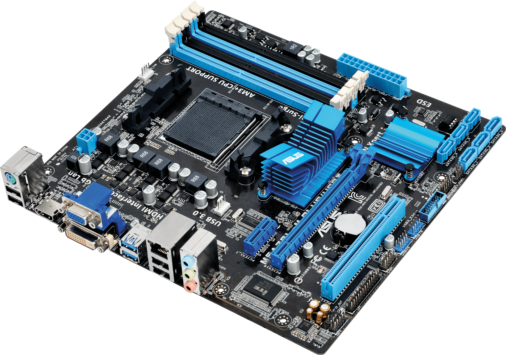

|
|
| FORM PEMBELIAN KOMPUTER DISINI!! |
Motherboard Micro ATX
|
Micro-ATX adalah varian motherboard yang lebih kecil dari ATX, dengan dimensi sekitar 24,4 cm x 24,4 cm. Meskipun lebih kecil, Micro-ATX tetap menawarkan beberapa slot ekspansi seperti slot RAM dan PCIe, meskipun jumlahnya lebih sedikit dibandingkan dengan motherboard ATX. Ini menjadikannya pilihan yang baik untuk pengguna yang menginginkan komputer desktop dengan ukuran lebih kompak namun tetap ingin memiliki beberapa opsi untuk ekspansi dan upgrade. Kelebihan dari Micro-ATX adalah ukurannya yang lebih kecil dan lebih hemat ruang, sehingga dapat digunakan dalam casing yang lebih ringkas. Namun, dengan ukuran yang lebih kecil, beberapa fitur dan ekspansi harus dikompromikan, seperti jumlah slot untuk kartu grafis atau perangkat lain. Micro-ATX cocok untuk pengguna yang membutuhkan komputer desktop dengan performa yang baik tetapi dengan ruang yang lebih terbatas, seperti untuk penggunaan kantor atau gaming ringan. |
 |